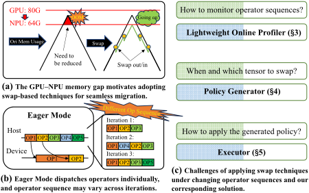
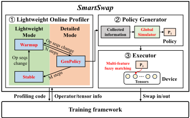
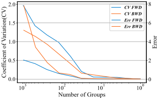
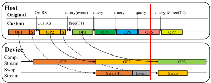
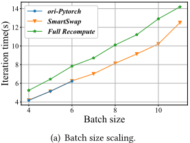
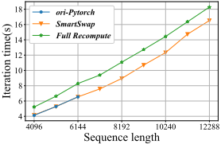
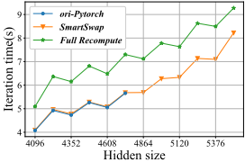
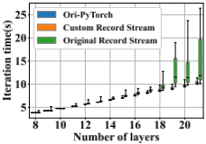
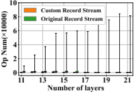

SmartSwap：算子序列变化下基于 Swap 的 LLM 训练内存优化
论文针对 Eager Mode 训练框架（如 PyTorch）中算子序列随迭代变化、导致基于静态计算图假设的现有 swap 内存优化方法失效的问题，提出端到端重构的 SmartSwap 系统。方法包含三个模块：轻量在线 Profiler 将算子序列整数化并持续监测变化，在 WarmUp/GenPolicy/Stable 阶段间自动切换；Policy Generator 利用均匀分组后组执行时间方差趋零的观察，以逻辑层粒度构建 Memory Reduction List 与候选列表，并用全局 swap 仿真器确定换出完成与预触发换入时机；Executor 通过多特征模糊匹配跨迭代定位张量，并以自定义 recordStream 用设备内 stream 协调替代 host-device 事件同步。在 Ascend 910B 上的实验表明：profiling 开销较 PyTorch profiler 降低 84.25%，可训练最大达硬件内存 4 倍的模型，相比重计算或高并行度最高提升性能 38.94%，系统已在生产环境部署一年。该工作属于 AI 训练系统软件层的内存管理优化，与本团队 IP 架构、RTL 与验证技术栈无直接交集。
LLM 训练内存需求超出单加速器 HBM 容量，swap（将激活张量换出至主机 DRAM）是不损失精度且可有效重叠的理想手段，但现有 swap 方法隐含算子序列跨迭代一致的假设（源自 Graph Mode 静态计算图）；在主流 Eager Mode 框架（PyTorch）中，混合精度 loss scale 调整、条件分支、在线验证、弹性训练等动态特性使算子序列跨迭代变化，导致旧策略失效，引发 OOM、内存使用次优乃至训练崩溃。动机场景是 GPU（A100 80GB）向 NPU（Ascend 910B 64GB）迁移时 16GB 内存缺口迫使修改模型并行度或设备数。
SmartSwap 沿 Profiling → Policy generation → Policy application 流程重构三个模块：(1) Lightweight Online Profiler：在算子分发点插入 hook，将算子序列表示为整数张量，以长度变化超过 5% 或余弦相似度低于 95% 判定序列变化，在 WarmUp/GenPolicy/Stable 三阶段间自动切换；Detailed 模式仅收集算子名、张量指针/类型/调用栈与迭代时长，刻意不采集逐算子执行时间以避免 CUPTI/AscendCL 类重型 profiling 开销。(2) Policy Generator：利用'将算子序列均匀分组后组执行时间 CV 趋近于零'的观察，以逻辑层为粒度由内存轨迹构建 MRL、按得分构建候选列表 CL，并用全局 swap 仿真器确定 swap-out 完成时间与 swap-in 预触发时机。(3) Executor：以算子名、调用栈、数据类型等多特征模糊匹配跨迭代定位张量（仅整数比较以避免 host 端开销），并用由仿真器给出安全释放点的自定义 recordStream 替代 PyTorch 原生实现，以设备内 stream 协调消除 host-device 同步造成的 host-bound 瓶颈。
轻量 Profiler 在 Lightweight 模式仅增加 0.9% 开销；Detailed 模式开销 34.6%，相比 PyTorch profiler 的 219.7% 降低 84.25%
相比原生 PyTorch，沿 batch size、层数、序列长度、hidden size 四个维度分别支持最大 4×、1.83×、4×、1.24× 的模型规模
相比全量重计算平均性能提升 16–19%；跨场景最高性能提升 38.94%
长稳实验：峰值内存 80GB 的 Llama2 单卡训练 5,000 步，loss 曲线与全量重计算完全重合；复现的 Capuchin 因在线验证引入的新算子序列在第 201 轮崩溃，SmartSwap 无运行时错误
自定义 recordStream 使内存块复用间隔平均缩小 3–4×、尾部缩小 2–3 个数量级，消除 host-bound 性能波动
实现逾 8,700 行 Python/C++ 代码，已在生产环境部署一年
首个系统性地在 swap 内存优化中支持 Eager Mode 变化算子序列的工作：区别于以往 Graph Mode 下'单次 profiling → 一次性策略 → 直接套用'的范式，SmartSwap 以持续在线轻量 profiling 感知序列变化、以逻辑层分组估计替代逐算子计时来平衡 profiling 开销与策略质量、以跨迭代多特征模糊匹配与自定义 recordStream 保证策略精确高效执行，并配合全局 swap 仿真器从全局视角确定 swap 时机。
相关度级别：low
命中能力域：无明显对应
理由：论文贡献全部位于 AI 训练框架与系统软件层（PyTorch-NPU 上的在线 profiling、swap 策略生成与运行时执行优化），不涉及内存/互连 IP 的架构与微架构设计、可综合 RTL、时序/物理实现、UVM/形式验证、仿真加速/Emulation 或 EDA 自动化，与 2.1–2.7 七个能力域均无实质技术交集。仅有的外围关联是：论文刻画了 LLM 训练在 HBM 容量不足时将激活张量经 PCIe 换出到主机 DRAM 的访存与带宽行为，可作为团队 HBM4/LPDDR/UCIe 等 IP 面向 AI 训练负载做 workload 分析时的背景输入，但这属于负载上下文认知，不构成可复用的技术方法。
建议动作：仅了解结论
arXiv:2509.11076v2 [cs.DC] 2026年7月15日
Zibo Wang¹，Yuhang Zhou¹，Zhibin Wang¹*，Shipeng Li¹，Xinjing Huang²，Chendong Cai²，Bingxu Mu²，Yuqing Sun²，Zhiheng Hu²，Bin She²，Shu You²，Guanghuan Fang²，Rong Gu¹，Wanchun Dou¹，Guihai Chen¹，Chen Tian¹
¹ 南京大学计算机软件新技术全国重点实验室
² 华为技术有限公司
大语言模型（LLM）规模的不断增长导致训练期间的内存需求激增，往往超出高带宽存储器（HBM）的容量。基于交换（swap）的内存优化在有效重叠的情况下既不会造成精度损失，也不会带来额外的端到端开销，因而是一种颇具吸引力的解决方案。然而，现有的交换方法假设算子序列保持一致，这在 Eager Mode 下并不现实，因为 Eager Mode 中算子序列可能随迭代而变化。
我们提出 SmartSwap，它重新设计了基于交换的内存优化的端到端流程，并且是首个考虑 Eager Mode 下算子序列变化的工作。SmartSwap（i）引入轻量级在线性能分析器（profiler），实现持续性能分析以监测算子序列；（ii）在算子信息有限的情况下生成有效的交换策略；（iii）优化策略执行模块，以实现策略的准确应用和更优性能。实验结果表明，SmartSwap 将性能分析开销降低了 84.25%，能够训练规模最大达硬件内存 4 倍的模型，同时适应算子序列的变化，并且与重计算或高度并行相比，性能提升最高达 38.94%。
本文此前曾以《Chameleon: Taming Dynamic Operator Sequences for Memory-Intensive LLM Training》为题发表。
近年来，大语言模型（LLMs）[5, 9, 10, 25, 30, 39] 凭借其卓越的能力已成为一个充满活力的研究领域。为了解决更复杂的问题，研究者们主要聚焦于增加模型参数的数量，这已被证明是一种有效的策略 [16, 18]。
然而，模型规模的爆炸式增长使得仅凭单个 AI 加速器有限的高带宽内存（HBM）已无法完成模型训练。缓解内存限制的方法有很多，例如并行化 [8, 36, 37, 47, 50, 58]、压缩 [40, 53]、稀疏化 [23, 44, 48]、重计算 [11, 43, 51] 等，这些方法相互正交，可以组合使用 [26, 29, 32, 38, 41, 45, 49]。其中，交换（swap）是一种理想的内存优化技术。该技术会在动态内存（即激活值）长时间不被使用时将其换出至主机 DRAM，
∗ Zhibin Wang 为通讯作者。
本作品根据知识共享署名 4.0 国际许可协议进行许可。DAC '26，美国加利福尼亚州长滩
© 2026 版权归所有者/作者所有。
ACM ISBN 979-8-4007-2254-7/2026/07
https://doi.org/10.1145/3770743.3803980

以释放 HBM，并在下次使用之前将其换回设备，从而确保训练不间断地进行 [28]。
主流的交换技术 [7, 19-22, 26, 28, 34, 35, 45, 49, 54] 通常在算子序列保持不变这一隐含假设下工作。这主要是因为这些方法是为早期流行的图模式（Graph Mode）框架设计的，例如 TensorFlow 1.x [27]、MindSpore [52] 以及其他框架 [12, 17, 42, 46]，在这类框架中，训练计算被编译为静态计算图，只需派发一次即可在整个训练过程中重复使用。这种静态结构使得计算融合、张量交换等整体优化成为可能，许多先前的工作已在此范式下探索了基于交换的方法 [7, 21, 26]。然而，调试与部署的复杂性促使研究者逐渐弃用图模式框架，进而推动了 PyTorch [6] 等注重灵活性与开发便捷性的即时模式（Eager Mode）框架的兴起。截至 2024 年 12 月，在机器学习论文的开放获取实现中，仅有 2% 使用 TensorFlow，而 60% 的实现采用了 PyTorch [1]。
动机示例：弥合 GPU 与 NPU 之间的内存差距，实现无缝的 PyTorch 训练。开发者通常在 GPU 上使用 PyTorch 进行模型原型设计与训练，并借助 Eager Mode（即时执行模式）实现快速迭代。昇腾（Ascend）NPU 如今已提供近乎即插即用的 PyTorch 支持 [2]，但迁移时往往会遭遇内存降级——例如 A100 的 80 GB HBM 对比昇腾 910B 的 64 GB。这 16 GB 的差距可能迫使开发者改变模型并行方式或设备数量，从而破坏原本稳定的工作流程。我们通过一种基于交换（swap）的内存优化方法来弥合这一差距，使 PyTorch 工作负载能够在容量较低的 NPU 上运行，而无需重构模型，也不会产生明显的性能损失。尽管该方法源于 GPU→NPU 迁移这一动机，但同样的方法也适用于内存容量各异的 GPU 代际之间的迁移。

然而，Eager Mode 框架固有的灵活性使得现有的 swap 技术难以奏效。已有工作 [7, 21, 26, 45, 49] 遵循典型的性能分析（profiling）→ 策略生成 → 策略应用的工作流程，其建立在 Graph Mode 框架中算子序列保持一致这一假设之上。它们从单次迭代中分析（profile）算子和张量的行为，生成一次性的 swap 策略（决定交换哪些张量以及何时交换），然后将该策略直接应用于后续迭代。这种设计在 Graph Mode 下运行良好，因为算子序列和张量标识符保持稳定。然而，在 Eager Mode 中，每个算子被逐个下发到设备上并按顺序执行，但相对于主机以不同的节奏推进。动态特性 [13, 15, 24, 31, 56] 使得不同训练迭代之间的算子序列各不相同，与上述假设产生冲突。这导致为较早序列生成的策略失效，不仅可能降低内存优化的效率，还可能威胁训练系统的可靠性。
为了在 Eager Mode 框架中实现高效的 swap，我们提出 Smart-Swap，这是首个在基于 swap 的内存优化中系统性支持变化算子序列的系统。如图 2 所示，SmartSwap 同样遵循性能分析 → 策略生成 → 策略应用的工作流程，由三个模块——轻量级在线性能分析器（Lightweight Online Profiler）、策略生成器（Policy Generator）和执行器（Executor）——组成，它们应对整个 swap 工作流程中的各项挑战，具体如下所述。
首先，在性能分析阶段，现有工作 [7, 21, 26, 45, 49] 的性能分析工具无法满足我们对变化算子序列进行轻量级在线分析的需求。序列变化可能使已生成的换入换出（swap）策略失效，导致内存使用欠佳或运行时错误。现有性能分析器（i）带来高昂开销——例如，使迭代时间从 4.9 s 增加到 15.7 s，造成 219% 的减速——并且（ii）缺乏在线支持，需要暂停训练并手动定义性能分析边界。为解决这一问题，我们实现了一个轻量级在线性能分析器（Lightweight Online Profiler，§3），它以极小的开销持续监测算子序列。它支持轻量（Lightweight）与详细（Detailed）两种模式，并包含一个阶段调整模块，可在 WarmUp、GenPolicy 和 Stable 阶段之间切换，在序列变化时自动触发新的换入换出策略生成。
其次，在策略生成阶段，我们面临性能分析开销与策略性能之间的权衡。为实现持续的在线性能分析，我们排除了诸如逐算子执行时间等高成本信息。然而，这些缺失的信息增加了生成有效换入换出策略的难度，因为预触发换入操作的精确时机通常依赖于算子级计时数据。我们观察到，将算子序列划分为大小均等的组能显著降低计时方差，使组的平均时间可以作为执行时间的低误差代理。为平衡性能分析成本与策略质量，我们利用这一洞察设计了一个轻量级策略生成器（Policy Generator，§4），它将算子序列划分为逻辑层，并在此粒度上确定换入换出操作。此外，我们引入了一个全局换入换出模拟器，从全局视角确定精确的换出与换入时机，在保持低性能分析开销的同时将性能下降降至最低。
第三，在策略应用阶段，如何准确且高效地将生成的策略应用于后续迭代同样充满挑战，因为即时执行（Eager Mode）框架在每次迭代中都会重新编译并分发算子，且不提供可用于跨运行追踪算子的唯一标识符。我们设计了一个执行器（Executor，§5），它利用多特征模糊匹配在迭代之间定位对应的算子与张量，同时仔细优化匹配的开销。此外，现有框架依赖朴素的 recordStream 函数 [57] 来实现跨流内存复用，但其频繁的主机-设备事件同步会使分发开销超过算子的实际执行时间，从而引发严重的主机受限（host-bound）问题。为消除这一瓶颈，我们利用全局换入换出模拟器提供的信息实现了一种定制的 recordStream 机制，以高效的设备内流协调取代主机-设备同步，从而避免主机停顿，进一步提升整体性能。
我们用超过 8,700 行代码实现了 SmartSwap，该系统已在生产环境中部署一年，并将很快开源。在 Ascend 910B [14] 上的实验表明，SmartSwap 能够适应变化的算子序列而不会引发训练错误。在可扩展性实验中，SmartSwap 实现了近线性的可扩展性，性能下降可忽略不计。当扩大训练模型的批大小、序列长度和隐藏层维度时，SmartSwap 分别能够容纳超出硬件内存容量至多 4×、4× 和 1.24× 的模型。此外，SmartSwap 还可用于降低并行度，或作为重计算的替代方案，实现最高达 38.94% 的性能提升。
在静态图模式（Graph Mode）框架中，算子序列保持固定；而在动态图模式（Eager Mode）框架中，大模型与动态训练技术的结合会导致算子序列发生变化，这与现有交换（swap）技术的假设相矛盾。这种变化源于多种因素。
在 Eager Mode 下，每个算子都由主机逐个派发，而动态训练技术可能会改变算子序列。例如，计算图会根据模型状态进行自适应调整，通过条件分支 [56] 在不同条件下执行不同的操作，从而改变算子序列。混合精度训练 [31] 为实现收敛而调整损失缩放因子（loss scale），如果跳过某次优化器更新，算子序列便会缩短。类似地，即时验证会在特定阶段启动验证，从而延长算子序列。弹性训练 [15, 24] 或并行度热切换 [13] 等并行训练技术也会导致算子序列发生变化。在实践中，算子序列的变化经常被观察到，尤其是由损失缩放因子的调整所引起的。
当算子序列发生变化时，先前的交换策略便会失效，从而导致以下问题：(i) 张量交换规模不足，无法防止内存溢出（Out-of-Memory, OOM）错误；(ii) 生命周期错位，即交换时机与张量的实际生命周期不匹配，导致内存使用欠佳；(iii) 若张量在下次使用前未被换回，则会产生运行时错误，进而导致崩溃。这种不可预测性不仅会降低内存优化效率，还会威胁训练系统的可靠性。
如 §1 所述，现有的性能分析器（profiler），例如 PyTorch 内置性能分析器，会产生显著的开销，在用于持续性能分析时会导致严重的性能下降。此外，它们缺乏在线支持，需要暂停训练并硬编码性能分析配置，这对于实际训练而言并不现实。若没有持续的在线性能分析，就无法跟踪并适应算子序列的变化。为解决这一问题，我们开发了一种轻量级在线性能分析器，它在算子分发点（operator dispatch point）处插入钩子（hook）[3]，并根据是否需要新的交换策略而在 Detailed 或 Lightweight 模式下运行。
Lightweight 模式：当不需要新策略时，性能分析器仅收集当前迭代中的算子。受分词（tokenization）[33] 的启发，我们为每个算子分配一个整数，并将序列表示为一个整数张量。通过跨迭代比较张量，我们能够以极小的开销高效地检测序列变化。性能分析器通过一个阶段调整模块（算法 1）来适应序列变化。§5 中 Executor 的多特征模糊匹配使 SmartSwap 能够应对轻微变化，仅当序列长度变化超过 5% 或余弦相似度降至 95% 以下时，才切换到 WarmUp 阶段。图 2 展示了各个阶段：WarmUp 阶段不执行任何操作，GenPolicy 阶段生成并执行策略，Stable 阶段则复用现有策略。
Input: OpSeq : Operator sequence represented as an integer tensor; m, n : Iterations with stable operator sequence before transferring to GenPolicy stage/Stable stage
Output: Stage 1: static StableStep ← 0 ▷ All static variables are 2: static PrevOpSeq ← OpSeq ▷ initialized only once 3: static PrevStage ← WarmUp ▷ at the very beginning. 4: if diff(len(OpSeq), len(PrevOpSeq)) < 5% and 5: CosineSimilarity(OpSeq, PrevOpSeq) > 95% then 6: StableStep ← StableStep + 1 7: if PrevStage is WarmUp & StableStep > m then 8: Stage, StableStep ← GenPolicy , 0 9: else if PrevStage is GenPolicy & StableStep > n then 10: Stage ← Stable 11: else 12: Stage, StableStep ← WarmUp , 0 13: PrevStage, PrevOpSeq ← Stage, OpSeq
Detailed Mode: During the GenPolicy stage, SmartSwap switches to Detailed mode, collecting essential data for policy generation with low overhead, including operator names, input and output tensor arrays, and iteration durations. For each tensor, we gather its pointer (data_ptr), type, usage count, and call stack, which are used for subsequent identification.

In PyTorch, the host dispatches operators asynchronously, with the host and device progressing at different paces. Collecting execution times requires heavy profiling tools like NVIDIA CUPTI [55] or Huawei AscendCL [4], which generate large amounts of performance data on the device and incur high costs in data transfer and computation. To avoid this overhead, we omit execution time collection and generate swap policies based on operator sequences and iteration durations, as described in §4.
In addition to operator and tensor data, the profiler tracks memory usage during operator execution. When a swap occurs, the profiler logs swap details, including location, tensor size, and other relevant information. This data allows us to reconstruct memory usage without swaps and use it in policy generation.
交换策略同时决定了内存节省与性能开销。本节介绍我们的策略生成器如何利用剖析信息来构建高效的交换策略。
为了生成有效的交换（swap）策略，SmartSwap 需要一个明确的优化目标：降低峰值内存占用，使其保持在硬件限制范围内并防止内存溢出（OOM）。利用性能分析器（profiler）收集的数据，我们重构了不进行交换时的内存使用情况，并通过识别内存超出硬件限制的阶段来构建内存削减列表（memory reduction list, MRL）。对于这些阶段中的每个算子，我们创建一个内存削减条目（memory reduction entry, MRE），用于指明在该时刻需要削减多少内存。由于训练遵循重复执行的模式，只要算子序列保持不变，分配-使用-释放（allocation-usage-deallocation）的顺序就保持一致，因此 MRL 可以被复用。当算子序列发生变化且需要新策略时，我们利用新收集的内存轨迹重建 MRL，具体流程如 Algo. 2 所示。
在训练过程中，虽然原则上任何张量都可以被换出（swap），但许多换出操作并不能带来内存收益。例如，仅在前向阶段使用的张量，其生命周期从不与峰值内存使用期重叠；换出这些张量会浪费 PCIe 带宽，并牺牲了换出那些真正能降低峰值内存的张量的机会。过小的张量同样会导致带宽利用率低下且收益有限。因此，我们排除那些生命周期与峰值内存时段不重叠的张量，并从其余张量中构建候选列表（candidate list, CL）。对于每个候选张量，我们使用式 (2) 计算其得分：
其中，𝑁𝑀𝑅𝐸 是该张量最后一次前向使用与第一次反向使用之间 MRE 数量的归一化值，𝑆 是其归一化后的大小，𝐶 控制二者的相对重要性。直观地说，更大的张量以及覆盖更多 MRE 的张量能带来更大的潜在内存削减量，应在策略生成过程中被优先考虑。
完整的策略生成流程总结于 Algo. 2 中。从宏观层面来看，我们的方法反复地基于剖析数据构建 MRL，构建能够识别可降低峰值内存的张量的 CL，并调用仿真器来确定可行的 swap 时机。该迭代过程持续进行，直至所有内存削减需求均得到解决。最后，计算 swap-out 完成时间与主动释放事件，从而形成在后续迭代中使用的最终 swap 策略。
swap 策略一旦生成，下一步便是在后续迭代中的指定位置派发这些 swap 操作，以实现内存削减。为确保精确性与高效性，我们开发了一个执行器（Executor）。
策略生成器输出一个 swap 策略，指定每次迭代中哪些张量需要被 swap。执行该策略需要在运行时准确识别这些张量。尽管两个张量在抽象计算图上可能等价
输入：ProfData 输出：Policy
1: MRL ← ConstructMemoryReductionList(ProfData)
2: while MRL.isNotEmpty() do
3: CL ← ConstructCandidateList(ProfData, MRL)
4: if CL.isNotEmpty() then
5: PolicyItems ← Simulator.simulate(CL, MRL)
6: Policy.extend(PolicyItems)
7: else
8: 抛出错误
9: Simulator.SetFreeTime(Policy)

——共享相同的使用模式与生命周期——但它们在各次迭代中占据不同的物理地址，且缺乏持久标识符。因此，Eager Mode 框架将它们视为不同的对象。同样的困难也适用于算子。
尽管 §3 中的自适应阶段切换机制通过重新生成策略来应对较大的算子序列变化，我们避免了频繁的重新生成。Executor 执行多特征模糊匹配以定位目标张量，从而能够适应较小的序列变化。它利用算子名称、调用栈和数据类型等特征来匹配张量，为微小的顺序偏移
在 Eager Mode 框架中，同一流上的算子是串行执行的，因此将 swap 操作直接置于计算流上会延迟计算。一种常见的变通方法是在专用流上发起 swap 操作，但这会带来跨流内存复用的隐患。PyTorch 在主机侧管理内存的分配与释放，每个流拥有各自的内存池，内存无法直接跨流复用。这一设计利用流内的顺序执行来提升分配效率。PyTorch 采用引用计数机制，在张量的引用计数降为零时自动释放其内存 [6]，从而确保内存释放的精确性。如图 4 所示，当 T1 正在 swap 流中被换出时，它在计算流中的引用计数变为零，其设备缓冲区被释放，并可能立即被重新分配给 OP2；由于两个流并发运行，OP2 可能覆盖这些过期数据。
PyTorch 的 recordStream 通过将张量标记为“正被另一个流使用”，并在该流完成后才予以释放，从而避免了这一隐患。这种做法保证了正确性，但存在两个缺点：它会延长内存的生命周期——由于主机/设备进度异步而延迟了复用——并且会触发频繁的事件查询，增加主机侧开销，并存在因主机瓶颈而拖慢运行的风险。
为克服这些问题，我们在自己的 Simulator 指导下实现了一个自定义的 recordStream。如 §4.4.2 所述，Simulator 能够识别换出完成时正在执行的计算算子，从而为我们提供精确的安全释放点。在图 4 的示例中，它判定当 T1 的换出完成时 OP2 正在运行；因此，我们在派发 OP2 之后立即回收 T1 的内存，并最早在 OP3 处即允许复用（而若使用原始的 recordStream，则需等到 OP7）。这种方法消除了主机轮询的必要，并避免了内存复用中不必要的延迟。这一设计实现了更早的内存复用，缩短了内存生命周期，并在保持正确性的同时消除了主机瓶颈带来的开销。
实现。我们基于 PyTorch-NPU，用超过 8,700 行 Python 和 C++ 代码实现了 SmartSwap。该实现已在生产环境中成功部署了一年，我们正致力于在不久的将来将其开源。
实验设置。我们的实验在一台服务器上进行，该服务器配备四颗基于 ARM 的 HiSilicon Kunpeng 920 CPU、2 TB 内存以及八块 Ascend 910B NPU，每块 NPU 配备 64 GB 高带宽存储器（HBM）。实验中我们使用神经网络计算架构（CANN）8.0 1 和 PyTorch 2.1.0 版本。对于算法 1 中的超参数，我们根据经验将 m 设为 2，将 n 设为 5。在 n = 5 的设置下，SmartSwap 会生成五种不同的策略，并选择其中运行时性能最优的一种作为长期策略。
为评估 SmartSwap 的性能与可扩展性，我们沿模型扩展的主要维度开展实验：批大小（batch size）、序列长度（sequence length）和隐藏维度（hidden size），并在 §6.4 中进行了层数扩展研究。这些维度代表了当前实践中扩大模型规模的标准方式。我们以 Llama2 作为目标模型，评估 SmartSwap 的实用性以及在每个扩展方向上可达到的最大模型规模。
我们记录了模型扩展过程中的训练性能，如图 5 所示。在所有扩展维度上，SmartSwap 始终达到我们在 §1 中设定的目标。由于换入换出（swap）操作与计算相互重叠、有效掩盖了开销，SmartSwap 在扩展至 PyTorch 最大规模的 80/64 甚至更高时仍保持近线性扩展。与完全重计算相比，SmartSwap 将平均性能提升 16-19%，并且在 PyTorch 能够在不发生内存耗尽（OOM）的情况下进行训练时，其引入的开销可忽略不计。我们进一步探究了 SmartSwap 的上限。从批大小、层数、序列长度和隐藏维度分别为 4、5、4096 和 4096 的设置出发，我们固定其中三个变量并增大第四个变量，直至出现 OOM，并记录最后一个可行值。与原生 PyTorch 相比，SmartSwap 在相应维度上可支持最大 4×、1.83×、4× 和 1.24× 的模型。在相同的硬件预算下，SmartSwap 不仅能够训练更大的模型，还能减少
1 https://www.hiascend.com/en/software/cann


序列长度扩展。

| Time (ms) | extra Overhead | |
|---|---|---|
| Baseline | 4911.1 | / |
| Ours-Low Overhead Mode | 4952.6 | 0.9% |
| Ours-Detail Mode | 6612 | 34.6% |
| Built-in Profiler | 15699.7 | 219.7% |
| | Time (ms) | extra Overhead |
在给定模型规模下所需的 NPU 数量，将依赖从通信量高的张量并行（TP）/流水线并行（PP）转向数据并行（DP），从而提升计算占比与整体利用率。在所有场景中，SmartSwap 可提供高达 38.94% 的性能提升。
为了评估这一轻量级性能分析器（profiler），我们在相同的 Llama2 训练任务上将其开销与 PyTorch profiler 进行对比。该任务可在单个 NPU 上运行而不会发生内存溢出（OOM），因此 SmartSwap 不会生成任何策略；这样一来，所有测得的时间仅由计算本身加上性能分析开销构成。每种配置均运行五次，我们报告其平均值。表 1 总结了结果，其中 Baseline 为原生 PyTorch 的迭代时间。我们的轻量级性能分析器在低开销模式下仅引入 0.9% 的开销——实际上可以忽略不计。即使在详细模式下，它也仅产生 34.6% 的开销，相对于 PyTorch profiler 的 219.7% 降低了 84.25%。这些结果表明，SmartSwap 的在线性能分析器在两种模式下均保持轻量，适合用于持续的算子序列跟踪。
我们评估了 SmartSwap 的长期稳定性，以确保换入换出（swap）操作不会损害训练的正确性。我们使用峰值内存扩展至 80 GB 的 Llama2，在单个 NPU 上结合损失缩放训练 5,000 步，并每 200 步运行一次在线验证。对比损失曲线可以发现，SmartSwap 产生的曲线与全量重计算的曲线完全重合，表明 SmartSwap 保持了训练语义。
我们还加入了对 Capuchin [45] 的复现。由于其代码并未公开，我们按照论文所述实现了一个 PyTorch 版本，并使用 (算子 ID, 第 i 个张量) 元组来识别换入换出目标。由于缺乏任何容忍序列漂移的机制，Capuchin 会错误识别张量，并在即时验证引入新算子序列后，于第 201 轮导致训练程序崩溃。相比之下，SmartSwap 的多特征模糊匹配能够吸收轻微的序列变化，并在出现较大变化时自动重新生成换入换出策略，从而实现无运行时错误的稳定长时间训练。


To validate the benefits of our custom recordStream, we conduct a comparative experiment using Llama2, scaling the model by increasing layer count. Fig. 6(a) shows that with the custom recordStream, training time per step scales nearly linearly. In contrast, the original recordStream exhibits significant fluctuations as model size grows. Profiling reveals that frequent event queries increase host-side operator dispatch overhead, causing NPU idle time and host-bound scenario.
To further investigate, we measure the number of operators dispatched between the recordStream call of a memory block and its eventual release back to the memory pool, which we call the memory block reuse interval. As shown in Fig. 6(b), the original recordStream yields reuse intervals two to three orders of magnitude longer at the tail and 3-4 × larger on average than our custom design. These prolonged intervals force every operator dispatch within them to query event status, substantially increasing CPU overhead and pushing the system into a host-bound scenario, whichis the source of the performance fluctuations shown in Fig. 6(a).
在本工作中，我们提出了 SmartSwap，一种基于交换（swap）的内存优化框架，经过端到端的重新设计，以应对 Eager Mode 框架中多变的算子序列。SmartSwap 具备用于持续监测的轻量级在线性能分析器（profiler），能够在算子信息有限的情况下生成交换策略，并对策略应用模块进行了改进，以获得更高的准确性和性能。实验表明，该性能分析器将开销降低了 84.25%，使 SmartSwap 能够实时跟踪算子序列的变化，且不引入训练误差。可扩展性测试表明，系统在性能损失极小的情况下实现了近线性加速，可在多个扩展维度上支持最大达到设备内存 4 倍规模的模型。此外，SmartSwap 还能够降低并行度需求或替代重计算（recomputation），带来最高 38.94% 的性能提升。
2 条证据未在原文中核对到